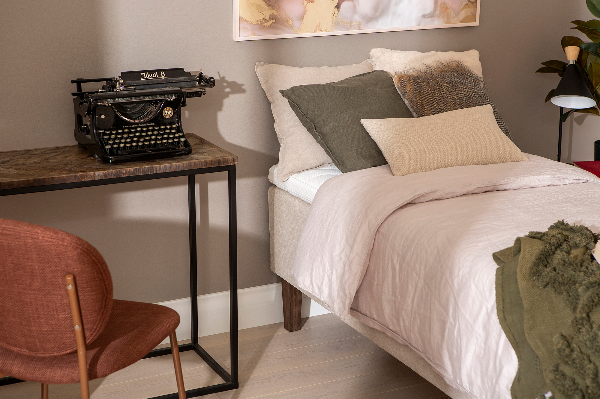
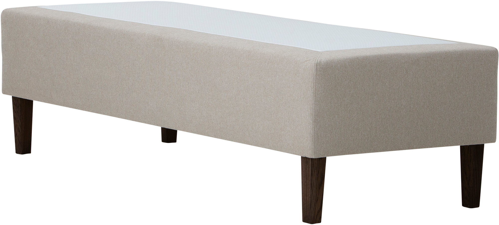
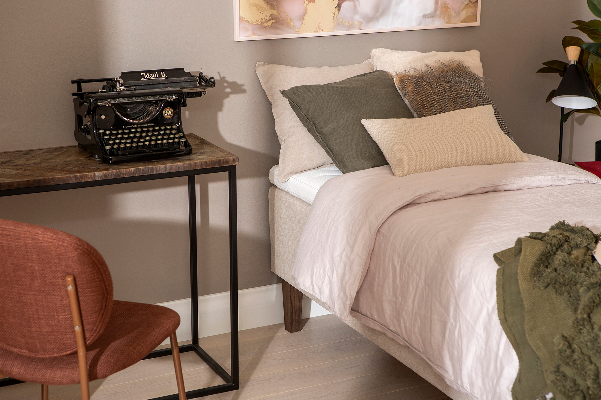
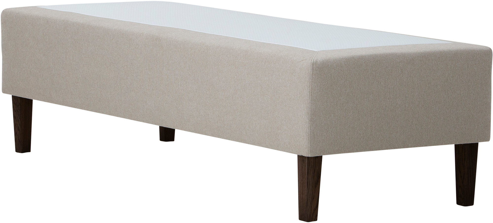

Moon Gold runkopatja 80x200, pocket 7-vyöh. Primo 05 beige
197665
 





Kuvaus
Mukavuutta ja tyylikkyyttä makuuhuoneeseen Moon Gold -runkopatja on suunniteltu tuomaan mukavuutta ja ajattoman tyylikkyyden makuuhuoneeseesi. Tämä Maskun omaan Nest & Living -brändiin kuuluva laadukas runkopatja on erinomainen valinta jokaiselle, joka arvostaa toimivuutta ja monipuolisia vaihtoehtoja. Gold-runkopatja on Nest & Living sarjan runkopatjojen kruunun jalokivi. Monipuoliset ominaisuudet takaavat miellyttävän unielämyksen: Moon Gold -runkopatja on saatavilla kahdessa tyylikkäässä värivaihtoehdossa: klassisen beige ja moderni antrasiitti. Valittavana on myös kaksi mukavuusratkaisua – 7-vyöhykkeinen pussijousitus, joka tukee kehoa yksilöllisesti, tai memory-muistivaahto, joka mukautuu nukkujan kehon muotoihin tarjoten miellyttävän tuen. Korkeat tammipetsatut puujalat tuovat runkopatjaan keveyttä ja tekevät sen siivoamisesta vaivatonta. Räätälöi itsellesi täydellinen nukkumisratkaisu: Moon Gold -runkopatjaa voi täydentää lisähintaan erilaisilla petauspatjoilla ja sängynpäädyillä, jotka lisäävät sängyn mukavuutta ja tekevät kokonaisuudesta juuri sinun tarpeisiisi sopivan. Sängyn runko on valmistettu kestävästä puusta, ja tuotteelle myönnetään huikea 4000 päivän laatutakuu. Tekniset tiedot: Värit: Beige tai antrasiitti Mukavuusvaihtoehdot: 7-vyöhykkeinen pussijousitus tai memory-muistivaahto Runkomateriaali: Kestävä puu, 4000 päivän laatutakuu Jalat: Korkeat tammipetsatut puujalat Hoito-ohjeet: Pidä sängyn verhoilu puhtaana säännöllisellä imuroinnilla ja kostealla liinalla pyyhkimällä. Kestävät materiaalit takaavat helppohoitoisuuden. Tuo arkeen ripaus luksusta: Moon Gold -runkopatja yhdistää laadun, mukavuuden ja monipuolisuuden erinomaisella hintalaatusuhteella. Tämä runkopatja tarjoaa upean yhdistelmän toimivuutta ja tyyliä, tehden siitä loistavan valinnan paremmin nukuttuihin öihin tyylikkäässä ja käytännöllisessä ympäristössä.
Tekniset tiedot
| Värit | Beige tai antrasiitti |
|---|---|
| Mukavuusvaihtoehdot | 7-vyöhykkeinen pussijousitus tai memory-muistivaahto |
| Runkomateriaali | Kestävä puu, 4000 päivän laatutakuu |
| Jalat | Korkeat tammipetsatut puujalat |
| ominaisuudet takaavat miellyttävän unielämyksen | Moon Gold -runkopatja on saatavilla kahdessa tyylikkäässä värivaihtoehdossa: klassisen beige ja moderni antrasiitti. Valittavana on myös kaksi mukavuusratkaisua – 7-vyöhykkeinen pussijousitus, joka tukee kehoa yksilöllisesti, tai memory-muistivaahto, joka mukautuu nukkujan kehon muotoihin tarjoten miellyttävän tuen. Korkeat tammipetsatut puujalat tuovat runkopatjaan keveyttä ja tekevät sen siivoamisesta vaivatonta. Räätälöi itsellesi täydellinen nukkumisratkaisu: Moon Gold -runkopatjaa voi täydentää lisähintaan erilaisilla petauspatjoilla ja sängynpäädyillä, jotka lisäävät sängyn mukavuutta ja tekevät kokonaisuudesta juuri sinun tarpeisiisi sopivan. Sängyn runko on valmistettu kestävästä puusta, ja tuotteelle myönnetään huikea 4000 päivän laatutakuu. Tekniset tiedot: Värit: Beige tai antrasiitti Mukavuusvaihtoehdot: 7-vyöhykkeinen pussijousitus tai memory-muistivaahto Runkomateriaali: Kestävä puu, 4000 päivän laatutakuu Jalat: Korkeat tammipetsatut puujalat Hoito-ohjeet: Pidä sängyn verhoilu puhtaana säännöllisellä imuroinnilla ja kostealla liinalla pyyhkimällä. Kestävät materiaalit takaavat helppohoitoisuuden. Tuo arkeen ripaus luksusta: Moon Gold -runkopatja yhdistää laadun, mukavuuden ja monipuolisuuden erinomaisella hintalaatusuhteella. Tämä runkopatja tarjoaa upean yhdistelmän toimivuutta ja tyyliä, tehden siitä loistavan valinnan paremmin nukuttuihin öihin tyylikkäässä ja käytännöllisessä ympäristössä. |
| jousisto | Vyöhykejaettu pussijousi |
| Petauspatja | Ilman petauspatjaa |
| Sängynpääty | Ei sisällä päätyä |
| saatavilla kahdessa tyylikkäässä värivaihtoehdossa | klassisen beige ja moderni antrasiitti. Valittavana on myös kaksi mukavuusratkaisua – 7-vyöhykkeinen pussijousitus, joka tukee kehoa yksilöllisesti, tai memory-muistivaahto, joka mukautuu nukkujan kehon muotoihin tarjoten miellyttävän tuen. Korkeat tammipetsatut puujalat tuovat runkopatjaan keveyttä ja tekevät sen siivoamisesta vaivatonta. |
| ohjeet | Pidä sängyn verhoilu puhtaana säännöllisellä imuroinnilla ja kostealla liinalla pyyhkimällä. Kestävät materiaalit takaavat helppohoitoisuuden. |
| Tuo arkeen ripaus luksusta | Moon Gold -runkopatja yhdistää laadun, mukavuuden ja monipuolisuuden erinomaisella hintalaatusuhteella. Tämä runkopatja tarjoaa upean yhdistelmän toimivuutta ja tyyliä, tehden siitä loistavan valinnan paremmin nukuttuihin öihin tyylikkäässä ja käytännöllisessä ympäristössä. |
| Koko | 80 × 200 |
| Väri | Beige |
| Materiaali | Primo 05 |